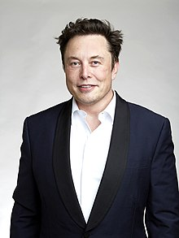
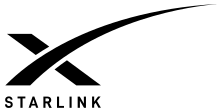
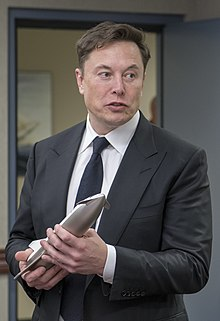
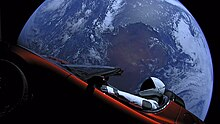
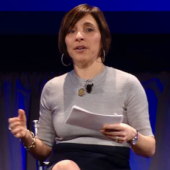

Ілон Маск
Ілон Рів Маск (англ. Elon Reeve Musk; нар. 28 червня 1971, Преторія, ПАР) — інженер, підприємець, винахідник, інвестор, мільярдер. Засновник компаній «SpaceX», «PayPal»[13], Neuralink і The Boring Company, головний дизайнер (Chief Product Architect), генеральний директор і голова ради директорів «Tesla Inc.», що керує заводом Tesla. Входить до ради директорів компанії «SolarCity», заснованої його двоюрідними братами.
У 2015 році в інтерв'ю CNN Ілон Маск заявив, що його улюбленою ракетою-носієм є український «Зеніт»[14]. У списку 100 найбагатших IT-мільярдерів 2017 року за версією «Forbes» посів 12-те місце[15], а із січня по листопад 2020 року завдяки зростанню ціни на акції «Tesla Inc.» він заробив $100,3 млрд і стрімко піднявся із 35-го на 2-ге місце у рейтингу «Bloomberg», володіючи $127,9 млрд[16][17][18].
Орієнтовно наприкінці 2020 — на початку 2021 року купив значну суму криптовалют — доги та біткоїнів на 1,5 млрд дол.[19]
6 січня 2021 року став найбагатшою людиною у світі, обігнавши Джеффа Безоса: у цей день його статки склали 188,5 млрд доларів — це на 1,5 мільярда доларів більше, ніж у Безоса, який очолював топ багатіїв із 2017 року[20][21].
19 лютого 2021 року знову став найбагатшою людиною у світі, вдруге обігнавши Джеффа Безоса. Перед цим список багатіїв три дні очолював Безос. У той день статки Ілона зросли до 200 млрд доларів проти 194 в Безоса[22].
29 жовтня 2021 року «Bloomberg Billionaires Index[en]» оприлюднив дані, відповідно до яких статки Ілона Маска перевищили 300 млрд доларів США — і це абсолютний світовий рекорд[23]. Маск увійшов у 2023 рік зі статками у 137 мільярдів доларів, ставши першою людиною, яка втратила 200 мільярдів доларів своїх статків після стрімкого падіння акцій Tesla. [24]
Зміст
Освіта
Маск народився і виріс у Преторії (ПАР). Його мати Мей Маск була моделлю та дієтологом, батько Еррол Маск мав свій інженерний бізнес. Свій перший комп'ютер Ілон купив у віці десять років і самостійно навчився на ньому програмувати. Коли йому було дванадцять, він продав свою першу програму — гру під назвою «Blastar», за 500 доларів. У сімнадцятирічному віці він виїхав до Канади, а в 1992 переїхав до США і вступив до Пенсільванського університету, де вивчав фізику та бізнес.
Кар'єра
Zip2
Першою компанією, яку заснував Маск, став стартап Zip2. Підприємець запустив проєкт разом зі своїм братом Кімбалом у 1995 році. Zip2 виробляла програмне забезпечення, що дає новинним виданням можливість розміщувати інформаційне наповнення сайту в інтернеті і пропонувати своїм клієнтам додаткові платні сервіси.
Одним з інвесторів компанії став фонд Mohr Dawidov Ventures. Партнери фонду почали планувати перепродаж Zip2, але Маск переконав їх, що її потенціал ще не до кінця розкритий, і в перспективі стартап може коштувати більше.
Клієнтами Zip2 були такі видання, як Нью-Йорк таймс, Pulitzer Publishing. У 1998 році керівництво компанії оголосило про майбутнє злиття з CitySearch. Угода так і не була закрита, а через рік, у 1999 році, стартап викупила організація Compaq, заплативши за Zip2 $ 304 млн. Ілону Маску, частка якого в компанії на той момент складала 7 %, або $ 22 млн.
X.com та PayPal
У березні 1999 року Маск став одним із засновників X.com. У 2000 році відбулося злиття компаній X.com та Confinity, одне з відділень якої мало назву PayPal. Обидві системи (X.com і PayPal) займалися забезпеченням персональних електронних грошових переказів за допомогою електронної пошти, і метою угоди було злиття обох платіжних систем, однак насправді цього не сталося. Маск рішуче виступав за бренд X.com замість PayPal, що викликало внутрішні політичні розбіжності, що закінчилися врешті-решт відставкою Маска за рішенням Ради директорів.
Однак стратегічне рішення Ілона про злиття двох компаній, поряд з активним просуванням електронної системи оплати на Інтернет-аукціонах (в першу чергу, eBay), привело в 2001 році до швидкого зростання бізнесу, який був остаточно перейменовано в PayPal. Такі значні результати дозволили компанії провести розміщення акцій на біржі в лютому 2002 року (і при цьому стати першою з дотком-компаній, що вийшли на біржу після терористичних актів 11 вересня 2001 року). У жовтні 2002 року PayPal була куплена eBay за 1,5 млрд доларів США. На момент продажу Маску належали 11,7 % акцій компанії, що дозволило йому вторгувати 165 млн доларів.
22 липня 2023 року Маск оголосив про ребрендинг загальновизнаної соціальної мережі Twitter на X і запровадження платформи соціальних мереж під назвою X.com, згодом зробивши перенаправлення X.com на Twitter.com. Традиційне зображення синього птаха було ребрендинговано логотипом X на всіх сторінках сайту. Обліковий запис Ілона Маска в Twitter, а також зображення профілю офіційного облікового запису @Twitter серед інших офіційних облікових записів, що належать Twitter, оновлено на новий логотип X[25]. Конкретні подробиці ребрендингу залишаються невідомими.
SpaceX
У червні 2002 року Маск заснував свою третю компанію — SpaceX. Вона є приватним розробником серії ракет-носіїв і космічних кораблів, а також комерційним оператором космічних систем. Ілон нині є її CEO і головним інженером. Хто не сумнівався в успіху молодого мільйонера — це підприємець Пітер Тіль, який інвестував у SpaceX. За його власними словами, він зробив це не тільки тому, що знав Ілона і вірив у його відданість справі, але й тому, що вважав космічні подорожі важливим етапом розвитку для суспільства, а SpaceX вважав потенційно дуже прибутковим капіталовкладенням.
У 2006 році пройшли випробування першої ракети-носія SpaceX — Falcon 1. Три польоти були невдалими, а у 2008 році вдалося здійснити успішний демонстраційний запуск симулятора корисного вантажу. І 13 липня 2009 року компанії вперше вдалося вивести на орбіту малайзійський супутник.
У грудні 2008 року НАСА підписало із SpaceX контракт на суму $1,6 млрд на 12 запусків носія Falcon 9 і вантажного космічного корабля Dragon до МКС, як заміну кораблів Спейс Шаттл після припинення програми їхнього запуску у 2011 році. На першому етапі передбачалася доставка вантажів, у той час як перевезення космонавтів мало здійснюватися російськими кораблями «Союз». Однак система Falcon 9/Dragon відпочатку замислювалася як засіб доставки на станцію астронавтів, і, враховуючи рекомендації Комісії Огустіна, відповідно до яких доставка людей повинна здійснюватися комерційними операторами, передбачалося, що SpaceX (і подібні їй компанії) за певний час мала стати основним космічним перевізником.
Перший запуск Falcon 9, що мала вже не один, а дев'ять двигунів Merlin на першому ступені, відбувся у червні 2010 року. Вдало підняли макет власного космічного корабля. А вже справжній Dragon вперше пристикувався до МКС у 2012 році. 22 грудня 2015 року — важлива дата у житті Маска, адже тоді вдалося здійснити керований спуск і посадку першого ступеня ракети на наземний майданчик, а 8 квітня 2016 року — вже і на плаваючу в океані платформу ASDS, яка використовується для економії палива[28][29]. Також уже іноді повторно застосовуються обтікачі корисного вантажу, вартість кожного складає ~$6 млн[30]
6 лютого 2018 року здійснено тестовий політ Falcon Heavy — найпотужнішої на даний час ракети. Як рекламний трюк Маск запустив у космос власне авто[31]. У травні 2020 року Ілон покепкував із Роскосмосу словами «Батут працює!», що ознаменували перший політ американських астронавтів до МКС не на російському кораблі, а на розробленому SpaceX пілотованому Crew Dragon (місія SpaceX DM-2)[32]. На вересень 2020 року компанії вдалося здійснити 93 вдалих запуски (три місії чекала невдача). Їхній повний список та інформацію про майбутні польоти можна побачити тут.
StarLink
Проєкт з виготовлення і запуску сузір'я супутників, за допомогою якого навіть у малозаселеній місцевості люди матимуть доступ до високошвидкісного (1 Гбіт/с із затримкою 8—10 мс) інтернету лише придбавши термінал користувача (супутникову антену із роутером). До середини 2020-х років компанія планувала відправити на певні орбіти близько 12 тисяч апаратів, однак у 2019 році з'явилася інформація про заявку на ще 30 тисяч штук[33]. Підйом супутників здійснюється ракетою Falcon 9 по 60 одиниць за раз. Покриття всієї планети очікується у 2021 році, хоча повноцінна якість інтернету проявиться після запуску усього сузір'я. Зароблені гроші мають піти на розробку ракети Starship.
Starship
За твердженням самого Ілона, на його світосприйняття значний вплив мав цикл науково-фантастичних романів «Фундація (Foundation)» і погляди Айзека Азімова на освоєння космічного простору як розвиток (і збереження) людського буття. Маск стверджує, що охоплення життям декількох планет може служити захистом від загрози зникнення людства.
Ось чому у 2012 році Маск презентував перший варіант ракети для дослідження і колонізації Марса. З роками дизайн і назва ракети змінювалися, і у 2018 році її назвали «Starship». Другий ступінь є космічним кораблем. Зараз ракету активно розробляють, і перший орбітальний політ може відбутися у 2021 році. Можливості Starship дозволять:
- Запуск великих за розмірами супутників, або значної їх кількості за раз.
- Польоти на Місяць — у вересні 2018 року SpaceX представила свого першого пасажира для туристичної місії навколо нашого супутника — #dearMoon. Ним став японський мільярдер Юсаку Маедзава.
- Транспортування пасажирів чи вантажу у межах Землі, що дозволить перелетіти на інший материк за ~40 хвилин.
- Основне завдання — перевезення людей на Марс.
За задумом підприємця у 2022 році на Марс спочатку відправлять велику кількість сонячних панелей, гірничовидобувне обладнання, марсоходи, прилади для підтримки життєдіяльності, їжу. Там також знадобляться машини для виробництва промислового метану і кисню, що є паливом для ракети. Перші сміливці (до 50 людей) мають полетіти на червону планету у двох пасажирських Starship, ще двоє будуть вантажними. Цей запуск заплановано на 2024 рік. План Маска полягає в тому, щоб із кожним новим рейсом посилати на Марс матеріали для будівництва прозорих куполів, які потім можна буде заповнювати киснем, аби відтворити звичну для людини атмосферу. Таких куполів буде ставати все більше і більше, і щоразу кількість матеріалів, поміщених у черговий вантажний корабель, зменшуватиметься — звільняючи місце для більшого числа людей. Великим здобутком було б розширити колонію до 1 млн осіб до 2050 року[34][35].
На думку підприємця, дослідження Марса дозволить встановити ціну на транспортні польоти на планету на рівні $500 тисяч — що «цілком прийнятно» для жителів розвинених країн, а також покласти початок освоєнню інших планет Сонячної системи.
Tesla Inc
Tesla Motors була заснована через рік після створення SpaceX, в 2003 році, на честь сербського вченого Ніколи Тесли, який є винахідником електродвигуна зі змінним струмом. Сферою діяльності цієї компанії є створення екологічно чистих електромобілів.
У 2007 компанія ледь не збанкрутувала. У грудні 2007 року її президентом призначили Зеєва Дрору, успішного високотехнологічного підприємця. Під керівництвом Дрори 10 % співробітників звільнили, але компанія стала прибутковою.
Проте Дрора не пропрацював і року. У жовтні 2008 року Ілон Маск змінив його на посаді генерального директора. Дрора став віцеголовою, а потім покинув компанію через два місяці. До цього часу Маск вклав 70 мільйонів доларів своїх власних грошей в Tesla.
Однак і під керівництвом Маска справи не пішли в гору. За чотири роки компанія продала всього 2250 електрокарів. Tesla мала проблеми зі своєчасним виконанням замовлень. Не допомогла навіть участь автомобіля в популярному автомобільному шоу Top Gear.
Перший автомобіль Tesla — перероблений Lotus Elise. В основу першого електромобіля поклали серійну бензинову модель Elise, створену компанією Lotus Cars. В Tesla просто поміняли всю «начинку» автомобіля. Замість двигуна інженери розмістили 6381 акумулятор.
Складна система пристроїв живлення автомобіля потребувала спеціальної системи охолодження. Позаяк засновники Tesla Motors не розумілися на автомобілях, вони почали переманювати фахівців з Lotus Cars, що мало не закінчилося скандалом. Всього ж у компанії на той час працювало близько сотні людей.
Solar City
Проєкт Ілона Маска SolarCity, про який в Україні говорять мало, також відрізняється своєю амбітністю. Компанія, заснована підприємцем в 2006 році, займається виробництвом сонячних панелей для вироблення електроенергії. SolarCity — один з провідних постачальників таких панелей в усьому світі.
До 2040 року, як вважає Маск, сонячна енергетика буде давати до 40 % всієї електроенергії у світі. Підприємець планує налагодити «безвідходне виробництво» — відправляти зношені автомобільні акумулятори на електростанції. Річ у тому, що батарея, яка зносилась на 30 %, непридатна для використання в електрокарі, а на електростанції здатна прослужити ще багато років.
Boring Company
Заснована Ілоном Маском наприкінці 2016 після того, як він вперше висловив ідею у Twitter'і. Маск скаржився на затори в Лос-Анджелесі та на обмеження теперішньої 2D транспортної мережі, як на натхнення для проєкту.
Станом на лютий 2017 компанія почала копати «тестову траншею» шириною 30 футів, довжиною 50 і 15 футів глибиною на території, де розташовано офіси SpaceX в Лос-Анджелесі, позаяк для цього не потрібні ніякі дозволи. За словами Маска, мета компанії — підвищити швидкість викопування мережі тунелів настільки, щоб це стало фінансово вигідно. 18 грудня 2018 року тестовий тунель Boring представили публіці.
Hyperloop
У 2012 році Ілон Маск, крім оголошення про свої плани з підкорення космосу, анонсував ще один проєкт — високошвидкісний трубопровідний пасажирський транспорт Hyperloop. Задумка схожа на капсули, в яких у великих офісах доставляють документи в інші відділи — тільки розміром в людський зріст. В одну таку капсулу має поміститися 28 осіб.
Через рік після цього Маск розкрив плановані специфікації проєкту. Діаметр трубопроводу складе 2,2 м, а сама капсула матиме розмір 1,35 × 1,1 м. Переміщатися по трубах транспорт буде за рахунок низького тиску, підтримуваного в трубопроводі, аеродинаміки і закачування повітря в проміжок який утворюється між поверхнями.
Hyperloop дозволить долати відстань в 550 км менше, ніж за пів години. Крім того, квиток на таку капсулу обіцяє коштувати досить дешево, тому що будівництво Hyperloop-магістралі обійдеться набагато дешевше, ніж залізниця.
15 січня 2015 підприємець оголосив про свій намір побудувати спеціальний трек для випробувань транспорту. Він знаходитиметься біля головної будівлі SpaceX. Тестувати свої капсули на ньому зможуть дослідні та студентські команди, а в майбутньому, можливо, будуть організовані конкурси серед таких команд. Маск виконав обіцянку, і в 2018 році проводилися вже треті міжнародні змагання транспортних капсул Hyperloop, щоб «пришвидшити появу її функціонального прототипу»[43].
Neuralink
У 2016 році Маск став співзасновником компанії Neuralink, нейротехнологічного стартапу, мета якого — розробити нейрокомп'ютерний інтерфейс, який має забезпечити обмін інформацією між мозком людини та електронним пристроєм. Компанія розпочала свою діяльність 2016 року, проте була представлена широкій публіці в березні 2017 року.
Майбутніми продуктами компанії можуть стати електронні комплектуючі, інтегровані в мозок людини, з метою усунення наслідків певних захворювань мозку, розширення пам'яті, оптимальнішого керування складними системами тощо.
Twitter and X-Corp
29 жовтня 2022 року Ілон Маск купив соціальну мережу Twitter[45].
У березні 2023 року Ілон Маск зареєстрував X Holdings Corp. та X Corp. у Неваді (США). Того ж дня Маск зареєстрував компанію зі штучного інтелекту (ШІ) X.AI [46] . Пізніше того ж місяця Маск подав заявку на злиття X Holdings I з X Holdings Corp. та Twitter, Inc. з X Corp [47]. У документації Маск повідомив, що капітал X Holdings Corp. складає 2 мільйони доларів США; X Holdings Corp. також буде материнською компанією для X Corp [48]. У тому ж місяці в електронному листі для всієї компанії Маск оголосив, що співробітники Twitter отримають акції X Corp [49].
У квітні 2023 року до суду було подано позов правим політичним активістом Лаури Лумер[en] проти Twitter та його колишнього генерального директора Джека Дорсі. Компанія Twitter, Inc. повідомила суд, що вона була об'єднана в X Corp. у Сан-Франциско в Каліфорнії. Аналогічний позов був поданий до Окружного суду США Південного округу Флориди [50].
Боротьба за штучний інтелект
Ще одна область, яка цікавить Маска — розробка штучного інтелекту. Сам він зізнається, що побоюється повторення сюжету, описаного в безлічі фільмів на кшталт «Термінатора» — тому, щоб не допустити повстання машин, намагається тримати руку на пульсі всіх пов'язаних зі штучним інтелектом розробок.
У березні 2014 Маск вклав $40 млн у компанію Vicarious FPC, що займається розробкою штучного інтелекту. Засновники проєкту планують скопіювати області кори головного мозку, які відповідають за сенсорне сприйняття, мислення, моторику, мову — і перетворити в програмний код.
У червні 2014 підприємець заявив, що компанія, подібна SkyNet, може бути створена вже за п'ять років — і людству варто задуматися, як цьому перешкодити. У жовтні на симпозіумі MIT підприємець зазначив, що, на його думку, розробка штучного інтелекту те саме, що виклик диявола.
15 січня 2015 стало відомо про те, що Маск скерував $10 млн до інституту, що займається дослідженнями в галузі безпеки людського майбутнього. Він також склав листа до вчених, у якому детально описав, що саме їм належить зробити, як розпоряджатися отриманими грошима і які цілі перед ними стоять.
31 липня 2017 року Facebook вимкнув систему штучного інтелекту через те, що боти винайшли свою мову, якою вони почали спілкуватися між собою. За кілька днів перед тим Ілон Маск назвав штучний інтелект найбільшою загрозою, з якою зіткнеться цивілізація, а засновник Facebook Марк Цукерберг активно заперечував це[51].